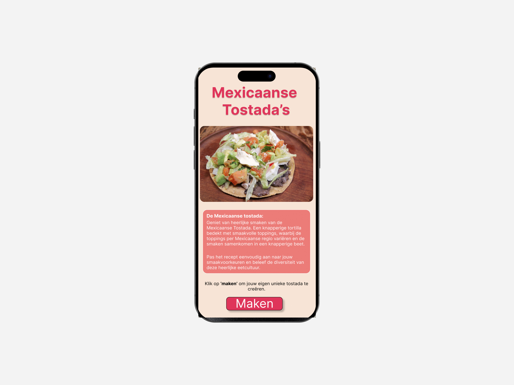

Heel Holland Kookt
Mexicaanse Tostada's
Groepsopdracht – 5 personen
Project van 3 weken
De Opdracht
Ontwerp voor een kookliefhebber tussen 40 en 60 jaar een recepten app. Jullie maken als team een app voor het recept dat jullie kok heeft gekookt.
Proces
Bij dit project hebben wij een kok gekozen. Deze kok laat vervolgens in een instructie video zien hoe het gerecht gemaakt moet worden – de Mexicaanse tostada’s. Elk teamlid heeft het recept nagemaakt. Zo komen wij zelf ondertussen achter wat duidelijk uitgelegd moet worden – onderzoek naar de moeilijke en makkelijke punten. Met deze informatie hebben wij een app uitgewerkt in verschillende ‘fidelities’ – low, medium en high. Bij elke fidelity hebben wij getest met de gebruikers.
Reflectie
Tijdens deze weken heb ik geleerd om in groepsverband duidelijke afspraken te maken. Ook heb ik geleerd om te leren testen met de gebruikers.